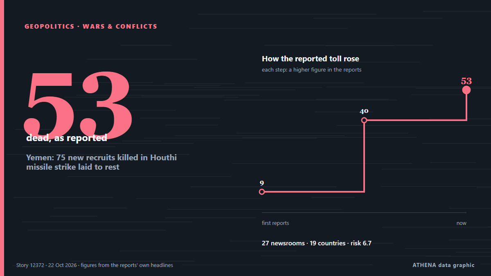

Yemen: 75 new recruits killed in Houthi missile strike laid to rest

A mass funeral was held Wednesday for 75 new recruits killed earlier this week in a Houthi missile strike in southern Yemen that was the deadliest attack since the resurgence of fighting in the Yemen… من Africanews (English)
نشرته بشكل مستقل 27 مصدرًا في 19 دولة منذ 18 أكتوبر، وأول من نشره RTÉ News؛ والتغطية تتراجع. يقدّر ATHENA الخطر بأنه مرتفع (6.7/10)، ويعود ذلك أساسًا إلى خطورة الضرر الموصوف ونطاقه الجغرافي والقطاعي. الثقة 90٪ (مرتفعة)، وعدد المصادر المستقلة المؤكِّدة: 27، بمتوسط موثوقية للمصادر يبلغ 78٪. وسائل الإعلام حسب البلد: أيرلندا (2), باكستان (2), الإمارات العربية المتحدة (2). التغطية: من 18 أكتوبر إلى 22 أكتوبر، 100 ساعة.
لماذا يهم: البحر الأحمر ومضيق باب المندب هما أقصر طريق بحري بين آسيا وأوروبا عبر قناة السويس. تدفع الهجمات على السفن التجارية الشركات إلى الالتفاف حول أفريقيا، ما يضيف وقتًا وكلفة على التجارة العالمية.
ما الذي تغيّر: 2 تقارير جديدة من 2 غرف أخبار خلال 24 ساعة حتى 22 أكتوبر.
تُعرض العناوين بالإنجليزية كما نُشرت.
نظرة سريعة
اختير وقُيِّم وكُتب وفق منهجية ATHENA المنشورة. لا يتدخل أي محرر في الأحداث بعينها. كيف يُنتَج ›
| 18 Oct 00:06 UTC | 1 |
|---|---|
| 18 Oct 06:06 UTC | 0 |
| 18 Oct 12:06 UTC | 0 |
| 18 Oct 18:06 UTC | 0 |
| 19 Oct 00:06 UTC | 1 |
| 19 Oct 06:06 UTC | 5 |
| 19 Oct 12:06 UTC | 20 |
| 19 Oct 18:06 UTC | 2 |
| 20 Oct 00:06 UTC | 0 |
| 20 Oct 06:06 UTC | 0 |
| 20 Oct 12:06 UTC | 1 |
| 20 Oct 18:06 UTC | 0 |
| 21 Oct 00:06 UTC | 0 |
| 21 Oct 06:06 UTC | 0 |
| 21 Oct 12:06 UTC | 1 |
| 21 Oct 18:06 UTC | 0 |
| 22 Oct 00:06 UTC | 1 |
| 19 Oct 15:50 UTC | 8.0 |
|---|---|
| 19 Oct 18:57 UTC | 7.3 |
| 22 Oct 03:55 UTC | 6.7 |
لماذا هذه الأرقام
الأهمية
الخطر
الثقة
التغطية — من نشر الخبر ومتى
العنوان كما نُشر · يفتح الأصل- RTÉ News · أيرلنداHouthi media says Saudi strike kills 9 in northern Yemen
- Express Tribune · باكستانAround 40 killed, injured in Houthi missile attack in Yemen’s Shabwa: official
- Middle East Eye · INTAt least 40 killed, wounded in Houthi strike on Yemen camp
- The Straits Times · سنغافورةHouthi attack kills 53 at Yemen government training camp, officials say
- The National · الإمارات العربية المتحدةAt least 53 killed in Houthi missile attack on government training camp in Yemen's Shabwa
- Arab Times · الكويتHouthi Missile Attack on Yemen Military Camp Kills at Least 20 Soldiers
- Times of India · الهندOver 50 killed as Houthis target Yemen military camp with ballistic missiles
- The New Arab · INTDozens killed in Houthi attack on Yemeni gov't military camp
- CGTN (World) · الصينHouthi missile attack on Yemen base kills 53
- Al Jazeera English · قطرHouthi attack on Yemen army camp in Shabwa kills at least 53: reports
- Shafaq News (English) · العراقHouthis kill at least 20 at army camp in Shabwa
- AzerNews · أذربيجانHouthi missile strike kills at least 40 in Yemen’s Shabwa province
- Al Jazeera English · قطرDozens killed after Houthi strike on military camp in Shabwa
- Anadolu Agency (English) · تركياMore than 53 killed, over 200 wounded in Houthi attack on southern Yemen
- Al-Monitor · الولايات المتحدةHouthi attack kills 53 at Yemen government training camp, officials say
- Business Recorder · باكستانHouthi attack kills 53 at Yemen government training camp, officials say
- APA (English) · أذربيجانHouthis launch missile strike on military camp in Yemen, killing 53 - UPDATED
- Gulf News · الإمارات العربية المتحدةMiddle East war: 5 things UAE residents need to know this evening (Oct 19, 2026)
- CBC News · كنداHouthi attack on Yemeni government forces kills 53: officials
- RTÉ News · أيرلندا50 dead in Houthi attack on Yemen govt camp - officials
- Asharq Al-Awsat (English) · المملكة العربية السعودية53 Killed, More Than 200 Wounded in Houthi Missile Strike on Security Camp in Shabwa
- DW English · ألمانياHouthi strike on Yemen government military camp kills at least 50
- The Guardian · المملكة المتحدةHouthi attack kills 53 in biggest single loss of life since Yemen civil war reignited
- The New York Times (World) · الولايات المتحدةHouthi Strikes Kill Dozens in Yemeni Desert Military Camp, Officials Say
- Daily Mirror · سريلانكاAt least 18 killed in Houthi attack on Yemeni government military camp in Shabwa
- The New Arab · INTYemen forces advance in Taiz; Iran blames US for Hormuz crisis
- BBC News · المملكة المتحدةHouthi missile strike on Yemen camp kills 50 security recruits, local authorities say
- The Daily Star — page reader · بنغلاديشYemen govt camp: Houthi attack kills over 50 people
- The Korea Times · كوريا الجنوبيةHouthi rebels strike Yemen's government forces, killing at least 53
- The New Arab · INTDeath toll from Houthi strike on Yemen govt camp rises to 73
- Africanews (English) · AFRYemen: 75 new recruits killed in Houthi missile strike laid to rest
- Middle East Eye · INTTwo civilians killed from Houthi attacks in Yemen’s Taiz